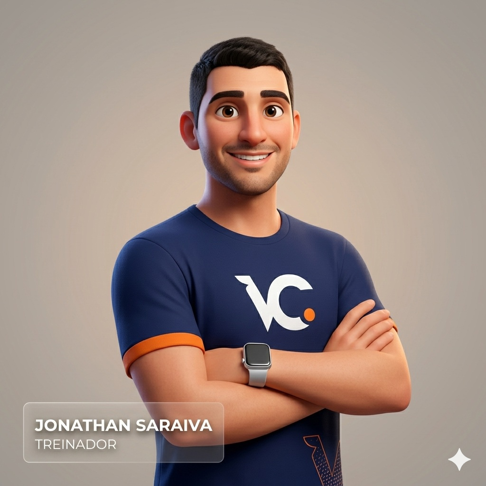
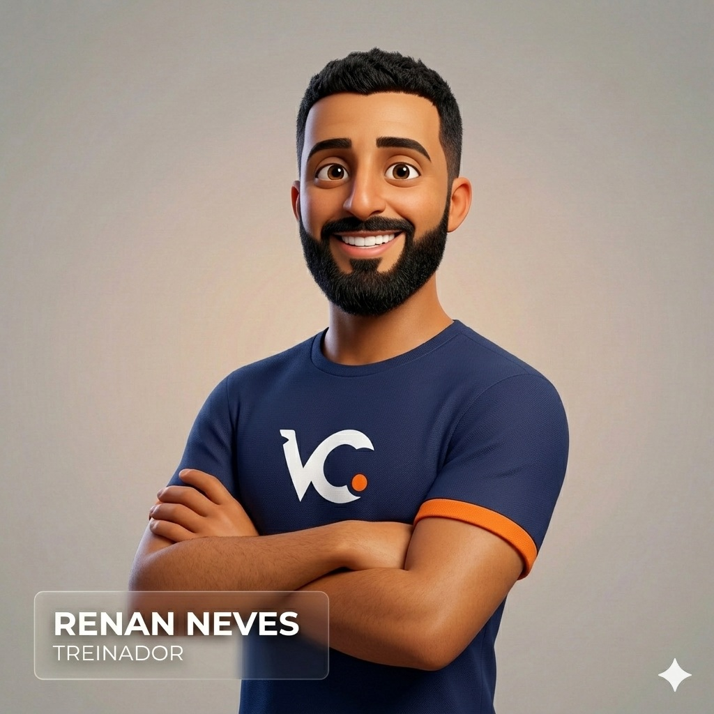
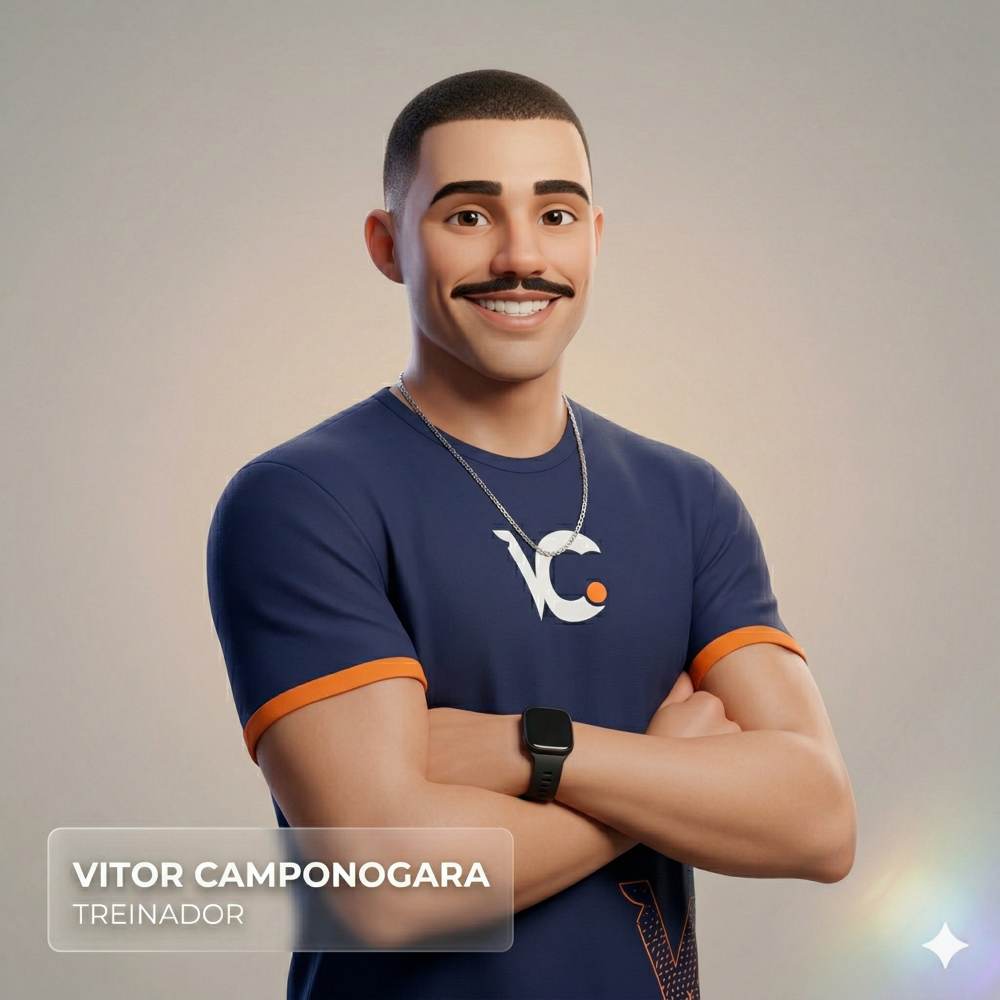
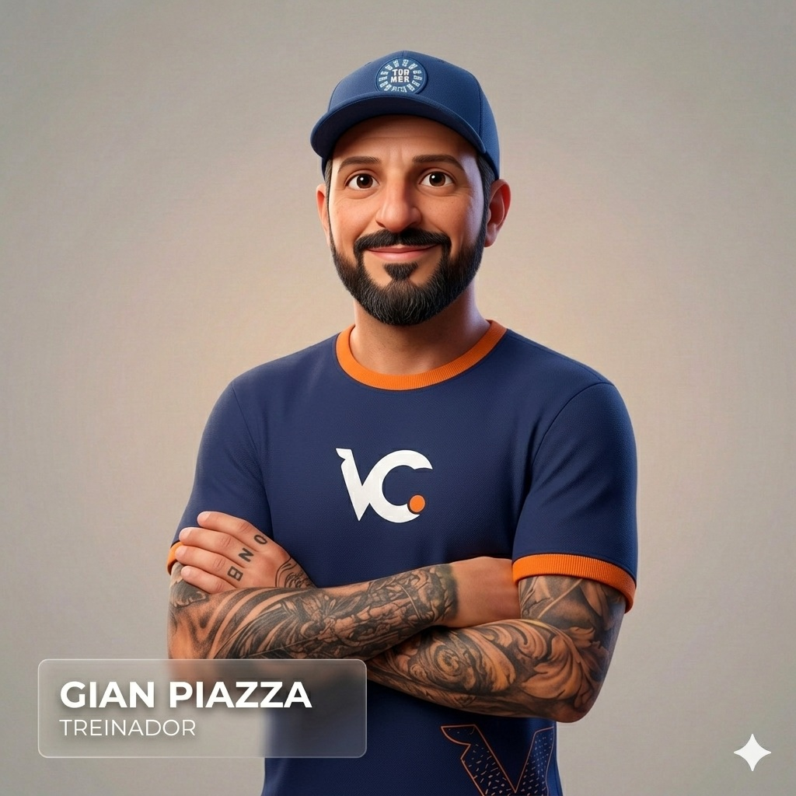

Conheça o time que acompanha a assessoria no dia a dia, com experiência que vai do atletismo em pista à ultramaratona.
Paulo Paz
Como se define?
Agregador e Idealista.
Experiência
20 anos de corrida, profissional de Educação Física e pós-graduando em treinamento nas modalidades de endurance.
Por que é treinador?
Para melhorar a vida das pessoas por meio da corrida com alegria e segurança.
Provas oficiais
5km10km21km42kmUltramaratona

Jonathan Saraiva
Como se define?
Pragmático.
Experiência
8 anos de corrida, profissional de Educação Física e pós-graduando em treinamento nas modalidades de endurance.
Por que é treinador?
Promover saúde por meio da corrida, proporcionar um novo estilo de vida e resultados expressivos.
Provas oficiais
5km10km21km42kmUltramaratona

Renan das Neves
Como se define?
Resiliente.
Experiência
10 anos de corrida, profissional de Educação Física e pós-graduação em treinamento especializado e funcional para corrida.
Por que é treinador?
Porque mudar a vida das pessoas através da atividade física é algo extremamente gratificante.
Provas oficiais
5km10km21km42kmUltramaratona
Michele Schivittez Terra
Como se define?
Motivadora.
Experiência
10 anos como corredora amadora e graduanda em Educação Física Bacharelado.
Por que é treinadora?
Porque acredito que correr transforma não só o corpo, mas também a mente. Ser treinadora me permite ajudar outras pessoas a descobrirem o quanto são capazes e a se apaixonarem pela corrida como eu.
Provas oficiais
3km5km10km21km42kmUltramaratona

Vitor Fick Camponogara
Como se define?
Um entusiasta com olhar crítico.
Experiência
6 anos de corrida, graduando em Educação Física Bacharelado e atleta federado na CBAt.
Por que é treinador?
Porque eu acredito no potencial das pessoas e no quanto somos capazes de evoluir, seja pela busca de qualidade de vida ou por metas pessoais. O esporte transforma vidas.
Provas oficiais
400m800m1500m3km5km10km21km

Gian Piazza
Como se define?
Apaixonado por corrida de rua, empático.
Experiência
20 anos na corrida e graduando em Educação Física Bacharelado.
Por que é treinador?
Acredito no poder que a corrida tem em transformar vidas, pois vivi na pele o impacto positivo que ela oferece e quero compartilhar isso com outras pessoas.